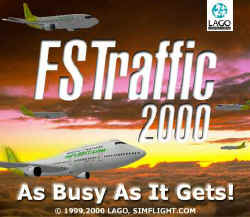

FSTraffic oder Nie mehr allein fliegen !
von Michael Kruse
So einfach läßt sich die neue
Realitätssteigerung für den FS98 und FS2000
umschreiben. Ein Stern geht auf am Shareware (Flusi)-Himmel,
denn es wird voll in der Luft und auf den virtuellen
Flughäfen dieser Welt.
Die gute Idee des "Try before you buy",
ermöglicht es "einsamen" Piloten|innen)
nach dem Download (runde 2 MB) von http://www.fstraffic.com
das Programm vor einem eventuellen Kauf für 30
Minuten zu testen. Danach läuft der Flusi zwar
weiter, aber FSTraffic klinkt sich aus. Der Name
FSTraffic ist wirklich Programm, denn nach der
schnellen Installation müssen zunächst einmal die
Flugzeuge, die im späteren Verkehr zu sehen sind,
über den Aircraft Converter ausgewählt,
klassifiziert und eingebunden werden. Danach bedarf
es eines Neustarts des FS und schon kann der
Luftraum sich füllen.
 Über den in der Menüleiste integrierten Punkt
LAGO kann FSTraffic komfortabel bedient werden.
Viele wichtige Parameter sind einstellbar, denn
einige werden sich wohl gleich sagen: "jegliche
Dynamik im FS lässt meine Anzahl Bilder pro Sekunde
doch dermaßen in den Keller sausen, dass ich mir
lieber ein Daumenkino angucke als den Flugsimulator".
Weit gefehlt, denn die einstellbare Mindestrate an
Bildern pro Sekunde sorgt für weiterhin flüssiges
Fliegen. Zudem konnte ich nur einen marginalen
Einbruch von ca. 1 (in Worten: EINEM) FPS
feststellen, was auf eine sehr gute und geschickte
Programmierung schließen lässt.
Über den in der Menüleiste integrierten Punkt
LAGO kann FSTraffic komfortabel bedient werden.
Viele wichtige Parameter sind einstellbar, denn
einige werden sich wohl gleich sagen: "jegliche
Dynamik im FS lässt meine Anzahl Bilder pro Sekunde
doch dermaßen in den Keller sausen, dass ich mir
lieber ein Daumenkino angucke als den Flugsimulator".
Weit gefehlt, denn die einstellbare Mindestrate an
Bildern pro Sekunde sorgt für weiterhin flüssiges
Fliegen. Zudem konnte ich nur einen marginalen
Einbruch von ca. 1 (in Worten: EINEM) FPS
feststellen, was auf eine sehr gute und geschickte
Programmierung schließen lässt.
 Nachdem alle Flugzeuge eingebunden wurden muss
für das sofortige Loslegen nur noch der Traffic
Generator bedient werden. Selbiger erstellt anhand
der ILS-Gleitpfade diverse An- und Abflüge für die
implementierten Flugzeuge. Die Windrichtung des
Simulators beeinflusst die jeweilige Flugrichtung.
Bereits nach 2-3 Minuten gibt es den ersten AHA
Effekt. Da bewegt sich doch was ? Eine Cessna ist im
Anflug auf Meigs Field und ich muss zusehen in die
Luft zu kommen.
Nachdem alle Flugzeuge eingebunden wurden muss
für das sofortige Loslegen nur noch der Traffic
Generator bedient werden. Selbiger erstellt anhand
der ILS-Gleitpfade diverse An- und Abflüge für die
implementierten Flugzeuge. Die Windrichtung des
Simulators beeinflusst die jeweilige Flugrichtung.
Bereits nach 2-3 Minuten gibt es den ersten AHA
Effekt. Da bewegt sich doch was ? Eine Cessna ist im
Anflug auf Meigs Field und ich muss zusehen in die
Luft zu kommen.
 Die wählbare Anzahl an sichtbaren Flugzeugen und
der Umkreis sorgen für unterschiedlich viel
Dynamik, die sofort den Realismus um einen großen
Faktor steigen lässt. Geschickerweise wandert die Dynamik
bei einem Flug mit. Damit ist sichergestellt das in
einem Umkreis von bspw. 25 Meilen Flugzeuge zu sehen
sind. Ein Beispiel: bei einem Flug von Düsseldorf
nach Frankfurt, wird zunächst Dynamik für
Düsseldorf, Mönchengladbach, Dortmund usw.
erstellt. Erst nach dem Start und mit Kurs Richtung
Süden, wird die zuvor genannte Dynamik deaktiviert
und beispielweise Köln neu hinzugeschaltet. So
umgibt die Dynamik das Flugzeug während des
gesamten Fluges. Das hält den notwendigen CPU
-Bedarf gering und die FPS Zahl konstant.
Die wählbare Anzahl an sichtbaren Flugzeugen und
der Umkreis sorgen für unterschiedlich viel
Dynamik, die sofort den Realismus um einen großen
Faktor steigen lässt. Geschickerweise wandert die Dynamik
bei einem Flug mit. Damit ist sichergestellt das in
einem Umkreis von bspw. 25 Meilen Flugzeuge zu sehen
sind. Ein Beispiel: bei einem Flug von Düsseldorf
nach Frankfurt, wird zunächst Dynamik für
Düsseldorf, Mönchengladbach, Dortmund usw.
erstellt. Erst nach dem Start und mit Kurs Richtung
Süden, wird die zuvor genannte Dynamik deaktiviert
und beispielweise Köln neu hinzugeschaltet. So
umgibt die Dynamik das Flugzeug während des
gesamten Fluges. Das hält den notwendigen CPU
-Bedarf gering und die FPS Zahl konstant.
Ein weiteres Highlight ist das Aufzeichnen von
eigenen Strecken die später durch die dynamischen
Flieger abgespult werden. Diverse Rollwege,
unterschiedliche An- und Abflüge sind mithin
möglich und ermöglichen eigene reale oder irreale
Kreationen. Damit sind die Möglichkeiten aber noch
nicht ausgeschöpft. Die Programmierer haben für
eine Im- und Export Möglichkeit gesorgt, um so
einen Tausch von erstellten Rollwegen und An /
Abflügen unter den Flusi-Fans aus aller Welt
anzuregen. Auf der Homepage von FSTraffic können
fertige Routen nach Buchstaben sortiert kostenlos
heruntergeladen werden. Ein sehr lohnenswerter
Download für Besitzer der GAP3 findet sich auf der
Homepage der GAP 3 Autoren.
http://home.t-online.de/home/Th-Hirsch/Gad-Main.htm
Die dort kostenfrei erhältliche dynamische Szenerie
lässt Frankfurt nun endgültig zu einem Drehkreuz
werden und befreit den Airport vom Status
Provinznest ohne Bewegung. Sehr schön ist der Tipp,
doch mal einfach einen Stau entstehen zu lassen. Die
Flugzeuge im FSTraffic besitzen soviel KI das sie
keinen Auffahrunfall verursachen sondern in
korrektem Abstand auf ein Weiterrollen warten.
 Bevor hier vollends der Eindruck entstehen kann,
der Verfasser hat den Boden unter den Füßen
verloren und wurde mit einem Freiflug nach
Osnabrück geködert, nun auch ein paar
Schwachstellen. Die Server-Verbindung zu http://www.Fstraffic.com
ist nicht immer die schnellste. Ein Download empfiehlt
sich eher nicht gegen Abend in Europa. Dafür ist
der Support und die Aktualität aber auf sehr hohem
Standard. Viele Probleme wurden bereits gepatcht und
ein guter Ablauf des Programms ist gewährleistet.
Auch andere Dinge sind mir aufgefallen, die aber
nicht unmittelbar auf FSTraffic zurückzuführen
sind. Bei gleichzeitigem Einsatz von bspw. FS98,
Europa Pro und GAP3 Szenerie landeten und starteten
in Mönchengladbach die Flugzeuge ein paar Meter
neben der Piste, was an der
"Doppelinstallation" der Szenerie samt
Gleitpfad liegen wird. Ebenso unglücklich finde ich
das gleichzeitige blinken aller Positionsleuchten
bei den dynamischen Flugzeugen. Ein Effekt der bei
Nacht einen merkwürdigen Eindruck hinterlässt.
Fast so wie ein Walzer im ¾ Takt. Vielleicht kann
dort noch mal der Schraubenzieher angesetzt werden
;-)
Bevor hier vollends der Eindruck entstehen kann,
der Verfasser hat den Boden unter den Füßen
verloren und wurde mit einem Freiflug nach
Osnabrück geködert, nun auch ein paar
Schwachstellen. Die Server-Verbindung zu http://www.Fstraffic.com
ist nicht immer die schnellste. Ein Download empfiehlt
sich eher nicht gegen Abend in Europa. Dafür ist
der Support und die Aktualität aber auf sehr hohem
Standard. Viele Probleme wurden bereits gepatcht und
ein guter Ablauf des Programms ist gewährleistet.
Auch andere Dinge sind mir aufgefallen, die aber
nicht unmittelbar auf FSTraffic zurückzuführen
sind. Bei gleichzeitigem Einsatz von bspw. FS98,
Europa Pro und GAP3 Szenerie landeten und starteten
in Mönchengladbach die Flugzeuge ein paar Meter
neben der Piste, was an der
"Doppelinstallation" der Szenerie samt
Gleitpfad liegen wird. Ebenso unglücklich finde ich
das gleichzeitige blinken aller Positionsleuchten
bei den dynamischen Flugzeugen. Ein Effekt der bei
Nacht einen merkwürdigen Eindruck hinterlässt.
Fast so wie ein Walzer im ¾ Takt. Vielleicht kann
dort noch mal der Schraubenzieher angesetzt werden
;-)
 Insgesamt ein Programm das mit 19,99 EURO viel
Leistung bei geringem Ressourcenhunger zu einem
vertretbaren Preis liefert. Der Trend zum direkten
Download von Software aus dem Internet hält auch
hier weiteren Einzug und ist ein neuartiger aber
bereits konkurrenzfähiger Distributionskanal. Ein HELP
File wird mitgeliefert und eine Dokumentation
(beides in Englisch) ist auf der Homepage im Adobe Akrobat
Format erhältlich. Die Idee mit dem 30 Minuten Test
gefällt mir ausgezeichnet, da der Kunde so vor
einem Fehlkauf gefeit ist. Flusi Freunde die mit dem
FS98 und hohen Frameraten unterwegs sind brauchen
keinen Einbruch der FPS zu befürchten. Piloten die
wie ich den FS2000 nutzen werden es vielleicht nicht
so leicht verschmerzen ein ganzes Frame abzutreten.
Die Zeiten ändern sich bestimmt auch noch ;-)
Insgesamt ein Programm das mit 19,99 EURO viel
Leistung bei geringem Ressourcenhunger zu einem
vertretbaren Preis liefert. Der Trend zum direkten
Download von Software aus dem Internet hält auch
hier weiteren Einzug und ist ein neuartiger aber
bereits konkurrenzfähiger Distributionskanal. Ein HELP
File wird mitgeliefert und eine Dokumentation
(beides in Englisch) ist auf der Homepage im Adobe Akrobat
Format erhältlich. Die Idee mit dem 30 Minuten Test
gefällt mir ausgezeichnet, da der Kunde so vor
einem Fehlkauf gefeit ist. Flusi Freunde die mit dem
FS98 und hohen Frameraten unterwegs sind brauchen
keinen Einbruch der FPS zu befürchten. Piloten die
wie ich den FS2000 nutzen werden es vielleicht nicht
so leicht verschmerzen ein ganzes Frame abzutreten.
Die Zeiten ändern sich bestimmt auch noch ;-)
Michael Kruse
michael.kr@arcormail.de


{kind=link}